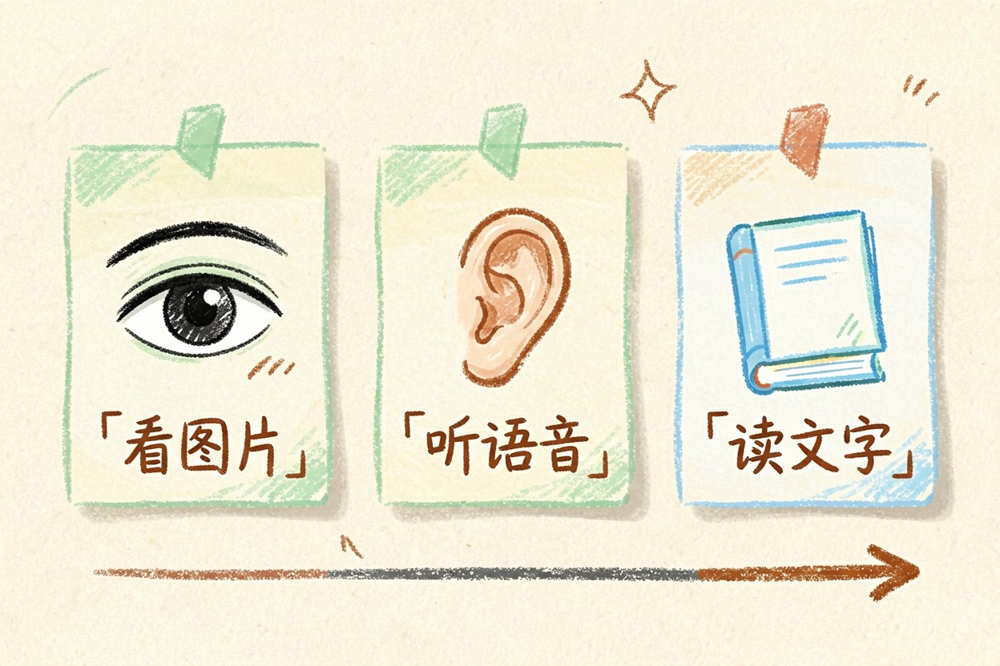
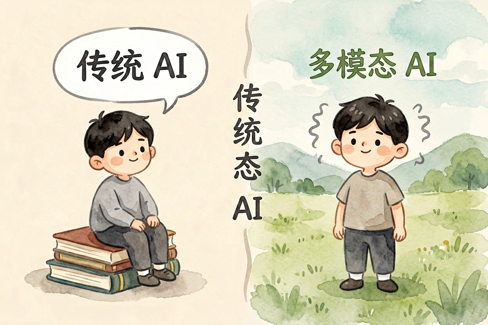
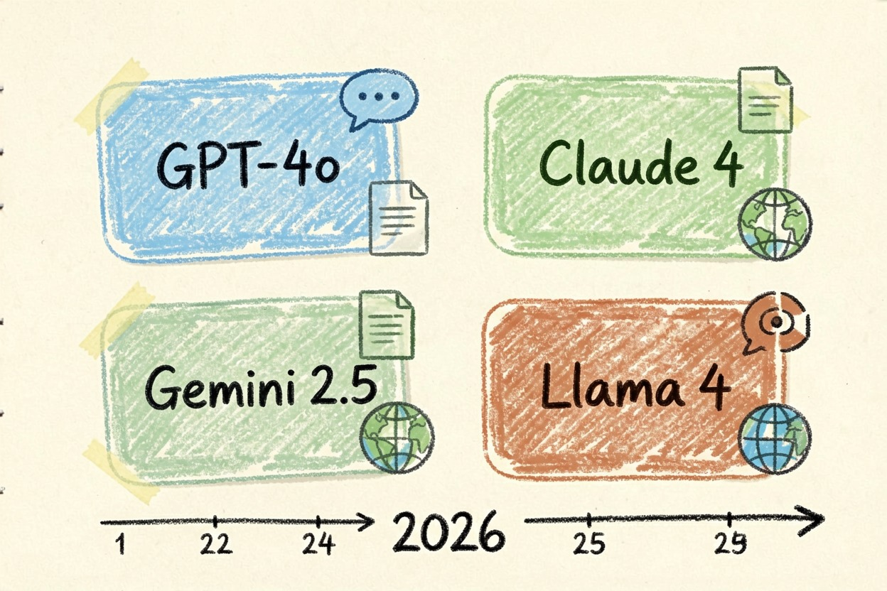
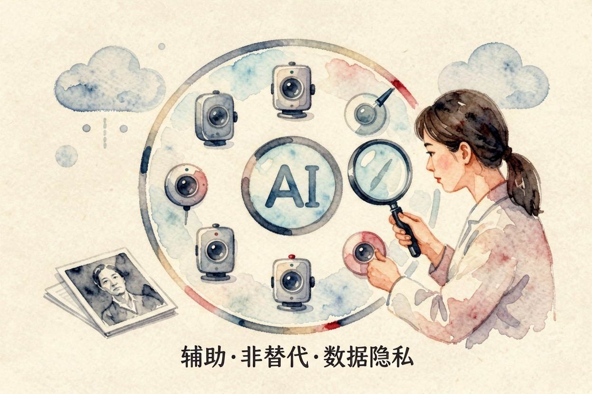

多模态 AI 是什么？能看能听意味着什么
以前 AI 只读文字，现在它看得见图、听得懂话、读得了字，还能把三种信息串起来回答你。这就是多模态 AI 的通俗解释。
多模态 AI 是什么：一句话解释

多模态 AI 是什么？一句话：能同时看懂图片、听懂语音、读懂文字的 AI。多模态，意思是多种感官通道。以前 AI 只会读文字。现在它能看、能听、能说。这种能力不是把三个模型拼在一起，而是同一个模型里同时处理多种信息。
打个比方。以前 AI 是个只读书的宅男。现在它走出了房间，有了眼睛、耳朵和嘴巴。这个比方，就是最直观的答案。
再想深一层。多模态 AI 是什么，还意味着它能把不同信息串起来。一张图表加一段语音，它都能同时接收。这在以前，是完全不敢想的事。
和传统 AI 有什么不同

传统 AI 是文字进、文字出。给它一张图，它看不懂。文字模型问你「这张图里有什么」，它只会摇头；多模态模型能直接看图作答。多模态 AI 把图片、语音、视频、文字放在一起处理。理解更全面。你拍一张不认识的植物，它能认出来。你发一段语音，它能听懂意思。
问多模态 AI 是什么，本质是问 AI 从「单感官」到「多感官」的跨越。这个跨越，让 AI 从文字世界走进了真实世界。多模态 AI 是什么，答案就在这份「多感官」里。理解这一点，你就能看懂为什么它能做以前做不到的事。
2026 年主流的几个多模态模型

多模态 AI 是什么，先看主流模型就明白了。现在主流的几个：GPT-4o（OpenAI）、Claude 3.5/4（Anthropic）、Gemini 2.5 Pro（Google）、Llama 4（Meta）。GPT-4o 的官方介绍见 OpenAI GPT-4o{:target="_blank"}。Gemini 的多模态能力文档见 Google DeepMind Gemini{:target="_blank"}。
这些模型各有侧重。GPT-4o 语音对话顺。Claude 擅长长文档和图表。Gemini 原生多模态。Llama 4 开源可自部署。选型时别只看参数，要看你要处理的模态组合：图、音、文哪个是重点。企业级多模态应用渗透率已超过 60%。普遍认为还在上升。
多模态 AI 能做什么：三个真实场景
问多模态 AI 是什么，不如看它能做什么。三个场景：
场景一 拍照问问题：拍一张植物照片，AI 告诉你它叫什么、怎么养
场景二 上传文档：丢一份 PDF 财报，AI 提取数字做分析
场景三 语音对话：对着手机说「帮我翻译这句」，AI 听懂并回话第一个场景，很多人拿它认植物、认菜、认药盒。第二个，会计和助理用它读报表。第三个，旅行者拿它当随身翻译。多模态 AI 的日常价值，正在于这三个动作人人用得上。拍照、传文档、说话，都是每天在发生的小事。它把 AI 带进了这些小事里。
什么情况下多模态 AI 还不够用

多模态 AI 是什么，不代表它什么都会。高精度医疗影像诊断，AI 是辅助，不是替代。涉及隐私的图片，上传前先想清楚数据去哪了。多模态 AI 比单模态强很多，但边界要清楚。该靠人的地方，还得靠人。
想理解多模态 AI 依赖的大模型底座，看大模型是什么。想了解能自动做任务的 AI，看AI 智能体是什么。它常和 RAG 搭配建知识库，见RAG 是什么。更多工具在AI 工具导航。
最后说一句反的：别把 AI 当眼睛用，就忘了自己的眼睛。多模态 AI 是什么搞清楚之后，你会更清楚它在哪有用、在哪该防。它看得到画面，但理解画面的永远是你，别让 AI 替你做重要判断。
本文信息核对于 2026-08-06。AI 产品的价格、免费额度与功能变动频繁，实际以各工具官网当前说明为准。